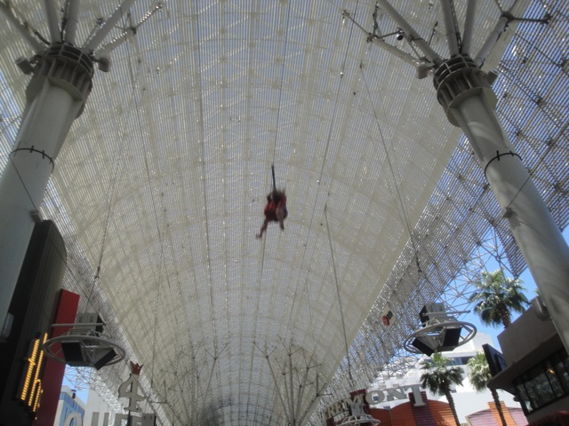
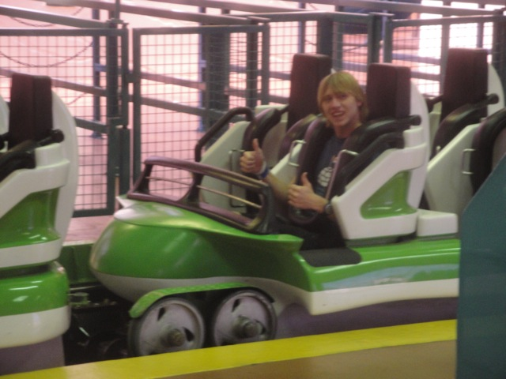

Well Lagoon may have closed, but we're still gonna have some more fun in Utah. Hmm, what can we do here that we can't do in Southern California?
I got an idea. Lets head on up to Park City and...
PLAY IN THE FREAKING SNOW!!! =)
As you can see, I am properly dressed for being in these weather conditions.
Good luck trying to track our path.
Gee. I wonder where I could've left my car keys.
Good thing I won this pink crayon at Lagoon or else I'd only be able to draw in the snow in yellow.
We wrote our name in the snow (I think my fingers got frostbite from writing that).
Check out this video of us having fun in the snow @ Park City.
Sh*t!!! This snow is deep!!!
"What do you mean we found a Couchsurfing Host!!? I just unpacked all my stuff here!!!" (BTW, thanks so much for the last minute accepting us.)
Hard to believe that this was taken in May.
What a weekend we're having. =)
We were going to eat at this Italian Resteraunt that looked really good. But we decided against it when we saw that eating here would be the equivelant of buying another Lagoon ticket.
So we ended up eating at this place instead.
Ladies, feel free to pick whatever bathroom you like. Men, to your right please.
One last look at the Great Salt Lake before we leave Salt Lake City.
Sweet!!! They have Mountain Dew Livewire at the Gas Stations in Utah!!! Cody, don't spill this on your phone.
Good bye Utah. You're a very pretty state with a lot of fun things to do.
More prettiness from Utah before we go.
Hey look. I can see Vegas in the distance.
Yep. We made it to Las Vegas.
Hey Penn & Teller. Hows it going? =)
I believe in nothing. Though if I had to choose something to believe in, this would probably be my first choice since since its actually something I've done before.
Whats left of the Nascar Cafe. How depressing.
All right. Lets do these Stratosphere rides (Oh and BTW, Thank you so much John for getting us up on the Stratosphere and on the rides for free).
View from the top of the Stratosphere Tower.
See that blue bullseye? That's your target. Now JUMP!!!!
First up, X Scream.
While its not scary, it is a super fun ride with a nice view.
I know everyone is terrified of this ride and all, but this the perfect ride to goof off on. See look. We're having a ball.
Here's our raw footage of all the rides at the Stratosphere where you can see us rowing X-Scream along.
Next up, Big Shot.
Again, its not super intense, but its fun. I'd say its my 2nd favorite Space Shot behind Dr. Doom.
BOO!!! Insanity is closed due to winds.
And in typical bad luck fashion, it opened up RIGHT AS WE LEFT THE STRATOSPHERE!!!!! By then, we didn't want to look for parking all over again, go through the long walk to the entrance, wait in line to go through security, take the elevator up to Insanity, and then go through the pain in the ass process of leaving. So we just ended up skipping Insanity. Besides, with our luck, it would've re-closed as soon as we got up there.
Don't forget to mention film you, put it on Youtube, and mock you for all eternity.
And of course. For lunch, we ended up eating at the most unhealthy resteraunt in the world. Heart Attack Grill.
Such healthy options to choose from at the Heart Attack Grill.
Glad to hear that. You must really care about the health of America Heart Attack Grill. Keep up the good fight.
My heart hurts just from thinking about the Octuple Bypass Burger.
"Wow. We never thought we'd see the day where we can claim that our food is healthy. Thank you Heart Attack Grill for allowing us to point to you as an unhealthy alternative."
This Butterfat Shake, though delicous, is the most unhealthy food item ever with a whopping 9000 calories. Just in case the slice of butter in the shake didn't tell you that this shake is unhealthy.
All right. This is my weight before eating at Heart Attack Grill.
I'm afraid of what my blood pressure is going to end up being.
Oh no. According to this machine, Cody is dead.
No, I did not finish my Bypass Burger. 2/3 of it was more than enough for me and was enough for me to forgo dinner that night. And the fact that I ordered a Buttershake didn't help me.
Oh god. I just gained two pounds from eating the food at Heart Attack Grill.
Still looks like a better movie than any of the Star Wars Prequels.
Don't pee at Heart Attack Grill if you have low self esteem.

Walking to the Heart Attack Grill, we found this zipline we could do over Vegas for only $15. Glad we did it as it was a ton of fun. =)
All right. Time for me to get the only non-kiddy credit left for me in Las Vegas.
Meh. Its a fun ride. Only difference between this and other loopscrews is that its indoors.

Cha Ching.
Hey. We're in Vegas. We might as well gamble a little.
Warning. Leaving this casino, your financial situation will be equivelant of Wile E. Coyote's fate in every cartoon he's starred in.
"Wait a second. Why the hell am I wasting my money like this?"
I spent $5 gambling and won $3.60. Yeah, I'm not a fan of gambling.
Nope. No Togo Death Machine for us today.
Still one of the coolest looking hotels in Vegas.
Hey Cody!!! Don't you wanna come back to Las Vegas really soon!!? =)
We decided to randomly stop in the middle of the Mojave Desert. And just like we promised in the begeinning of the update, we stopped on Zzyzx Rd.
"Screw you guys heading back to Ventura. I'm gonna hitchhike my way back to Utah."
Hey. I was reading in the snow yesterday. So I had to stop and read in the desert today.
We may be back in Ventura, but the trips not over as we've still got the Primus Concert to look foreword to!!! =)
Primus put on a great show with great songs and great imagery.
The only problem with the show was the audience. They were HORRIBLE!!!!! They had no basic respect whatsoever. They kept pushing, shoving, screaming "PRIMUS SUCKS!!!!! PRIMUS SUCKS!!!!!" over many of the songs, and generally acting like obnoxious assholes. Some teenage girls actually ended up starting some big fight during one of the songs. And it was one that I liked, so thanks for completely ruining that song live. I know when Les Claypool was telling the backstory about Del Davis Tree Farm, people were screaming and shouting and I just wanted to slap them and say "Shut the f*ck up and let Les Claypool speak!!!!" Hell, even during the intermission when they were playing Popeye Cartoons, there was this one super obnoxious guy just screaming "YEAH!!!! POPEYE!!!!! I LOVE POPEYE!!!! POPEYE IS AWESOME!!!! PRIMUS IS AWESOME!!! PRIMUS SUCKS!!! I LOVE PRIMUS!!! BLAH BLAH BLAH!!!!" It reminded me of being back at the Three Days Grace Concert, which is NOT something I want to be reminded of, cause lets face it. Three Days Grace just flat out sucks and everything about that show was awful. But this behavior for a really awesome band depressed me far more.
Knowing the audience for this show, I would GLADLY vomit on my neighbor.
EVERYTING IS MADE IN CHINA!!!!
Its a shame that this audience was here because just judging the show without them, this ranks up there with Big Bad Voodoo Daddy as far as great concerts go.
Well thats our Lagoon Road Trip. Lagoon kicked tons of ass and I was pleased with every aspect of this trip. I must say that this road trip was an improvement from our Glass Beach Road Trip and it just seems like every road trip we do gets better and better. The fact that on both of these road trips, we managed to make it to all these far away places like the Oregon Border and Salt Lake City on our schedule times if not earlier gives me great confidence for our upcoming 2 week Texas Road Trip where we'll be doing 3 Suicide Nights as well as covering some mind numbing distances. Hard to believe that this road trip is already over and that Texas is less than 2 months away.